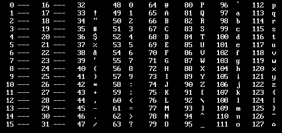

Логическая функция F задаётся выражением: (х ∧ ¬ y) ∨ (x ≡ z) ∨ w,
Ниже представлен фрагмент таблицы истинности функции F. Определите, какому столбцу таблицы истинности функции F соответствует каждая переменная w, x, y, z.
?
?
?
?
F
0
1
0
1
1
0
0
Укажите, какому столбцу соответствует каждая из переменных.
from itertools import product, permutations
def f(x,y,z,w):
return (x and (not y)) or (x == z) or w
for x1, x2, x3, x4 in product([0,1], repeat=4):
t=(
(0,0,x1,1,0),
(0,x2,1,x3,0),
(x4,1,1,0,0)
)
if len(t) == len(set(t)):
for p in permutations('xyzw', r=4):
if all(f(**dict(zip(p, line))) == line[-1] for line in t):
print(*p)
Для второй функции просто добавьте еще одно if высказывание после первого.
База номера 6
from turtle import *
screensize(3000, 3000)
tracer(0)
m = 20 # <-- масштаб
left(90)
# задание исполнителю
pu()
for x in range(-60, 60):
for y in range(-60,60):
goto(x * m, y * m)
dot(5)
done()
Исполнитель Черепаха
Исполнитель Черепаха действует на плоскости с декартовой системой координат. В начальный момент Черепаха находится в начале координат, её голова направлена вдоль положительного направления оси ординат, хвост опущен.
Запись Повтори k [Команда1 Команда2 … КомандаS] означает, что последовательность из S команд повторится k раз.
Черепахе был дан для исполнения следующий алгоритм: Повтори 7 [Вперёд 10 Направо 120].
Определите, сколько точек с целочисленными координатами будут находиться внутри области, ограниченной линией, заданной данным алгоритмом. Точки на линии учитывать не следует.
from turtle import *
screensize(3000, 3000)
tracer(0)
m = 40
left(90)
for _ in range(7):
fd(10 * m)
rt(120)
pu()
for x in range(-60, 60):
for y in range(-60, 60):
goto(x * m, y * m)
dot(5)
done()
Изменяйте m для изменения масштаба картинки
Исполнитель Цапля
Исполнитель Цапля действует на плоскости с декартовой системой координат. В начальный момент Цапля находится в начале координат, её клюв направлен вдоль положительного направления оси ординат, клюв опущен.
Цапле был дан для исполнения следующий алгоритм:
Повтори 5 [Дуга 5, 0, 5, 180 Дуга 5, 5, 0, 180 Дуга 5, 0, -5, 180 Дуга 5, -5, 0, 180].
Определите, сколько точек с целочисленными координатами будут находиться внутри области, ограниченной линией, заданной данным алгоритмом. Точки на линии учитывать не следует.
from turtle import *
screensize(3000, 3000)
tracer(0)
m = 40
left(90)
for _ in range(5):
circle(5 * m, 180)
rt(90)
circle(5 * m, 180)
rt(90)
circle(5 * m, 180)
rt(90)
circle(5 * m, 180)
rt(90)
pu()
for x in range(-60, 60):
for y in range(-60, 60):
goto(x * m, y * m)
dot(5)
done()
От функции Дуга 5, 0, 5, 180 нас интересует только первое и последнее числа.
Первый шаг к выполнению задания - скопировать таблицу из экселя в блокнот через Ctrl + C
Для удобства назовем файл с цифрами file.txt
Теперь, для перебора по всем строкам используем:
for line in open('file.txt'):
a = [int(x) for x in line.split()]
Найдите количество строк
Откройте файл электронной таблицы, содержащей в каждой строке пять натуральных чисел.
Определите количество строк таблицы, содержащих числа, для которых выполнены оба условия:
— каждое число в строке встречается по одному разу,
— утроенная сумма максимального и минимального значений не превышает удвоенной суммы оставшихся чисел.
В ответе запишите только число.
count=0
for line in open('file.txt'):
a = [int(x) for x in line.split()]
p1 = [x for x in a if a.count(x) == 1]
if len(p1) == len(a):
if 3 * (max(a) + min(a)) <= 2 * (sum(a) - max(a) - min(a)):
count+=1
print(count)
Откройте файл электронной таблицы, содержащей в каждой строке шесть натуральных чисел.
Определите количество строк таблицы, для чисел которых одновременно выполнены все следующие условия:
— в строке есть повторяющиеся числа;
— максимальное число в строке не повторяется;
— сумма всех повторяющихся чисел в строке меньше максимального числа этой строки. При подсчёте суммы повторяющихся чисел каждое число учитывается столько раз, сколько оно встречается.
В ответе запишите число — количество строк, удовлетворяющих заданным условиям.
count=0
for line in open('file.txt'):
a = [int(x) for x in line.split()]
p1 = [x for x in a if a.count(x) > 1]
if len(p1) > 0 and a.count(max(a)) == 1 and sum(p1) < max(a):
count+=1
print(count)
Ячейки в других строках таблицы
В каждой строке электронной таблицы записаны шесть натуральных чисел.
Назовём ячейку таблицы хорошей, если для неё выполняются следующие условия:
— число в данной ячейке не встречается в других ячейках этой же строки;
— число в данной ячейке ровно 50 раз встречается в других строках таблицы.
Определите количество строк таблицы, содержащих хотя бы одну хорошую ячейку.
all_numbers = [int(a) for b in open('file.txt') for a in b.split()]
count= 0
for line in open('file.txt'):
a = [int(x) for x in line.split()]
p1 = [x for x in a if a.count(x) == 1]
for i in p1:
if all_numbers.count(i) == 50:
count+=1
print(count)
Нашлось, Заменить
Исполнитель Редактор получает на вход строку цифр и преобразует её. Редактор может выполнять две команды, в обеих командах v и w обозначают цепочки цифр.
А) заменить (v, w).
Эта команда заменяет в строке первое слева вхождение цепочки v на цепочку w.
Если в строке нет вхождений цепочки v, то выполнение команды заменить (v, w) не меняет эту строку.
Б) нашлось (v).
Эта команда проверяет, встречается ли цепочка v в строке исполнителя Редактор. Если она встречается, то команда возвращает логическое значение «истина», в противном случае возвращает значение «ложь». Строка исполнителя при этом не изменяется.
выполняется команда1 (если условие истинно) или команда2 (если условие ложно).
Какая строка получится в результате применения приведённой ниже программы к строке, состоящей из 77 единиц?
НАЧАЛО
ПОКА нашлось (11)
ЕСЛИ нашлось (222)
ТО заменить (222, 1)
ИНАЧЕ заменить (11, 2)
КОНЕЦ ЕСЛИ
КОНЕЦ ПОКА
КОНЕЦ
s = 77 * '1'
while '11' in s:
if '222' in s:
s = s.replace('222', '1', 1)
else:
s = s.replace('11', '2', 1)
print(s)
Содержащая n цифр
...
заменить ... команда заменяет в строке первое слева вхождение цепочки v на цепочку w.
...
Дана программа для Редактора:
НАЧАЛО
ПОКА нашлось (411) ИЛИ нашлось (1111)
ЕСЛИ нашлось (411)
ТО заменить (411, 14)
КОНЕЦ ЕСЛИ
ЕСЛИ нашлось (1111)
ТО заменить (1111, 1)
КОНЕЦ ЕСЛИ
КОНЕЦ ПОКА
КОНЕЦ
На вход приведённой выше программе поступает строка, начинающаяся с цифры «4», а затем содержащая n цифр «1» (3 < n < 10 000).
Определите наибольшее возможное значение суммы числовых значений цифр в строке, которая может быть результатом выполнения программы.
res = []
for n in range(3, 10_001):
s = '4' + n * '1'
while '411' in s or '1111' in s:
if '411' in s:
s = s.replace('411', '14', 1)
if '1111' in s:
s = s.replace('1111', '1')
res.append(sum(map(int, s)))
print(max(res))
Пройтись по маскам
Для узла с IP-адресом 117.191.37.84 адрес сети равен 117.191.37.80. Чему равно наименьшее возможное зачение последнего (самого правого) байта маски? Ответ запишите в виде десятичного числа.
from ipaddress import *
for x in range(33):
net = ip_network(f'192.168.32.48/{x}', 0)
if str(net.network_address) == '192.168.24.0':
print(net.netmask)
Пройтись по узлам сети
В терминологии сетей TCP/IP маской сети называют двоичное число, которое показывает, какая часть IР-адреса узла сети относится к адресу сети, а какая — к адресу узла в этой сети. Адрес сети получается в результате применения поразрядной конъюнкции к заданному адресу узла и его маске. Сеть задана IР-адресом 112.160.0.0 и сетевой маской 255.240.0.0.
Сколько в этой сети для которых количество единиц в двоичной записи IР-адреса не кратно 5?
В ответе укажите только число.
from ipaddress import *
net = ip_network('112.160.0.0/255.240.0.0', 0)
count = 0
for ip in net:
if f'{ip:b}'.count('1') % 5 != 0:
count += 1
print(count)
Значение выражения записали в системе счисления
Значение выражения 7 × 72104 - 6 × 71270 + 3 × 757 - 98 записали в системе счисления с основанием 7. Найдите сумму цифр получившегося числа и запишите её в ответе в десятичной системе счисления.
n = 7 ** 2104 - 6 * 7 ** 1270 + 3 * 7 ** 57 - 98
n7 = ''
while n > 0:
n, rem = divmod(n, 7)
n7 = str(rem) + n7
print(sum(map(int, n7)))
Операнды выражения записаны в системах счислений
Операнды арифметического выражения записаны в системах счисления с основаниями 12 и 14:
yAAx12 + x02y14.
В записи чисел переменными x и y обозначены допустимые в данных системах счисления неизвестные цифры. Определите значения x и y, при которых значение данного арифметического выражения будет наименьшим и кратно 80. Для найденных значений x и y вычислите частное от деления значения арифметического выражения на 80 и укажите его в ответе в десятичной системе счисления.
result_search = []
for x in '0123456789AB':
for y in '0123456789AB':
ex = int(y + 'AA' + x, 12) + int(x + '02' + y, 14)
if ex % 80 == 0:
result_search.append(ex)
if result_search:
print(min(result_search) // 80)
Так как x и y используются в обоих выражениях, то они оба должны удовлетворять максимальному числу в данной системе счисления.
При любых переменных
Для какого наименьшего целого неотрицательного числа А выражение (3m + 4п > 63) ∨ ((m ≤ А) ∧ (n < А)) тождественно истинно при любых целых неотрицательных m и n?
def f(m, n, a):
return (3 * m + 4 * n > 63) or ((m <= a) and (n < a))
print(min(A for A in range(0,200) if all(f(m, n, A) == 1 for n in range(200) for m in range(200))))
print(min(..)) если ищем минимальное или max(), если ищем максимальное.
На числовой прямой даны два отрезка
На числовой прямой даны два отрезка: P = [1, 39] и Q = [23, 58]. Какова наибольшая возможная длина интервала A, что логическое выражение ((x ∈ P) → ¬(x ∈ Q)) → ¬(x ∈ A) тождественно истинно, то есть принмает значение при любом значении переменной x.
for x in [k * 0.25 for k in range(-1000, 1000)]:
P = 1 <= x <= 39
Q = 23 <= x <= 58
A = 1
f = (P <= (not Q)) <= (not A)
if f != 0:
print(x)
A = 1 если ищем наибольшее, = 0 если наименьшее.
f == если наибольшего, != если наименьшего
f .. 1 если выражение истинно, .. 0 если ложно.
Если обрыв, то это ответ.
Если разрыв и если ищем наибольшее, то ищем наибольший отрезок, иначе берем все числа между крайними.
Обозначим поразрядную конъюнкцию
Обозначим через m&n поразрядную конъюнкцию неотрицательных целых чисел m и n. Так, например, 14&5 = 11102&01012 = 01002 = 4. Для какого наименьшего натурального числа A формула x&57 = 0 ∨ (x&23 = 0 → ¬(x&A = 0))
истинна при всех натуральных значениях переменной x?
def f(x, a):
return (x & 57) == 0 or ((x & 23 == 0) <= (not ((x & a) == 0)))
print(min(a for a in range(1, 200) if all(f(x, a) for x in range(1, 2000))))
Все действия над числами записать в скобки!
range(0 или 1, 200) в зависимости от искомого числа - натурального или неотрицательного
Обозначим через ДЕЛ утверждение
Обозначим через ДЕЛ(x, y) утверждение «натуральное число x делится без остатка на натуральное число y». Для какого наибольшего натурального числа A логическое выражение (¬ДЕЛ(x,7) ∧ ДЕЛ(x,13)) →(x>A−40) истинно (т.е. принимает значение 1) при любом натуральном значении переменной х?
def d(x, a): return x % a == 0
def f(x, a):
return ((not d(x, 7)) and d(x, 13)) <= (x > (a - 40))
print(max(A for A in range(1,200) if all(f(x, A) == 1 for x in range(1, 200))))
Рекурсия
Алгоритм вычисления значения функции F(n), где n — натуральное число, задан следующими соотношениями:
F(1) = 1;
F(n) = F(n - 1) × (n + 1) при n > 1.
Чему равно значение функции F(4)? В ответе запишите только натуральное число.
def F(n):
if n == 1:
return 1
if n > 1:
return F(n - 1) * (n + 1)
print(F(4))
Достигнут лимит рекурсии
import sys
sys.setrecursionlimi(99_999)
Первая часть кода не меняется от задания 19 до 21, КРОМЕ тех случаев, когда в 19м кто-то выигрывает после неудачного хода противника. В таком случае пишем в последнем return .. else any(h), считаем 19й и потом обратно меняем, запоминая значение.
Простая основа
Два игрока, Петя и Ваня, играют в следующую игру. Перед игроками лежит куча камней. Игроки ходят по очереди, первый ход делает Петя. В игре разрешено делать следующие ходы:
— добавить в кучу один камень;
— если количество камней в куче чётно, добавить половину имеющегося количества;
— если количество камней в куче кратно трём, добавить треть имеющегося количества;
— если количество камней в куче не кратно ни двум, ни трём, удвоить кучу.
Например, если в куче 5 камней, то за один ход можно получить 6 или 10 камней, а если в куче 6 камней, то за один ход можно получить 7, или 8, или 9 камней.
Игра завершается, когда количество камней в куче достигает 96.
Победителем считается игрок, сделавший последний ход, то есть первым получивший кучу, в которой будет 96 или больше камней.
В начале игры в куче было S камней, 1 ≤ S ≤ 95.
def f(s, m):
if s >= 33: return m % 2 == 0
if m == 0: return 0
h = [f(s + 1, m - 1), f(s + 3, m - 1), f(s * 2, m - 1)]
return any(h) if (m - 1) % 2 == 0 else all(h)
Меняются только строки 2 и 4 - во второй строке число и направление, в четвертой возможные шаги.
Решение 19, 20, 21
Укажите минимальное значение S, при котором Петя не может выиграть первым ходом, но при любом первом ходе Пети Ваня может выиграть своим первым ходом.
print('19)', [s for s in range(1, 33) if f(s, 2)])
В range() пишем возможные в задачи s. Далее в зависимости от того, кто должен закончить игру, пишем для него if (..). Если кто-то должен не закончить игру на каком-то ходе, то not if (..).
Для каждого номера прописываем свое решение через отдельные print().
Усложнённая основа
Два игрока, Петя и Ваня, играют в следующую игру. Перед игроками лежит куча камней. Игроки ходят по очереди, первый ход делает Петя. За один ход игрок может добавить в кучу один или три камня или увеличить количество камней в куче в два раза. Например, имея кучу из 15 камней, за один ход можно получить кучу из 16, 18 или 30 камней. У каждого игрока, чтобы делать ходы, есть неограниченное количество камней.
Игра завершается в тот момент, когда количество камней в куче становится не менее 33. Победителем считается игрок, сделавший последний ход, то есть первым получивший кучу, в которой будет 33 или больше камней. В начальный момент в куче было S камней, 1 ≤ S ≤ 32.
Будем говорить, что игрок имеет выигрышную стратегию, если он может выиграть при любых ходах противника. Описать стратегию игрока — значит, описать, какой ход он должен сделать в любой ситуации, которая ему может встретиться при различной игре противника.
def f(s, m):
if s >= 96: return m % 2 == 0
if m == 0: return 0
h = [f(s + 1, m - 1)]
if s % 2 == 0:
h.append(f(s * 1.5, m - 1))
elif s % 3 == 0:
h.append(f(s + s / 3, m - 1))
else:
h.append(f(s * 2, m - 1))
return any(h) if (m - 1) % 2 == 0 else all(h)
Обычное возрастание аргумента
У исполнителя Удвоитель две команды, которым присвоены номера.
1. Прибавь 1.
2. Умножь на 2.
Первая из них увеличивает число на экране на 1, вторая удваивает его. Программа для Удвоителя — это последовательность команд. Сколько есть программ, которые число 2 преобразуют в число 22?
def f(x, end):
if x > end: return 0
if x == end: return 1
return f(x + 1, end) + f(x * 2, end)
print(f(2,22))
Содержит число + не содержит число
Исполнитель преобразует число на экране. У исполнителя есть три команды, которым присвоены номера.
1. Прибавь 1.
2. Прибавить 2.
3. Умножь на 2.
Программа для исполнителя — это последовательность команд. Сколько существует программ, для которых при исходном числе 3 результатом является число 18 и при этом траектория вычислений содержит число 14 и не содержит число 8?
def f(x, end):
if x > end: return 0
if x == end: return 1
if x == 8: return 0
return f(x + 1, end) + f(x + 2, end) + f(x * 2, end)
print(f(3, 14) * f(14, 18))
Содержит число в тракетории значит, что мы идем до этого числа, а потом до конечного.
Не содержит число значит, что если мы встретим это число, то путей дальше нет, вернем 0.
Содержит 2 числа
Исполнитель М17 преобразует число, записанное на экране. У исполнителя есть три команды, которым присвоены номера:
1. Прибавить 1.
2. Прибавить 2.
3. Умножить на 3.
Первая из них увеличивает число на экране на 1, вторая увеличивает его на 2, третья умножает на 3. Программа для исполнителя М17 — это последовательность команд. Сколько существует таких программ, которые преобразуют исходное число 2 в число 12 и при этом траектория вычислений программы содержит числа 8 и 10? Траектория должна содержать оба указанных числа.
def f(x, end):
if x > end: return 0
if x == end: return 1
return f(x + 1, end) + f(x + 2, end) + f(x * 3, end)
print(f(2, 8) * f(8, 10) * f(10, 12))
Не содержит двух команд
Исполнитель преобразует число на экране.
У исполнителя есть три команды, которые обозначены буквами.
A. Вычесть 1.
B. Прибавить 3.
C. Умножить на 2.
Программа для исполнителя — это последовательность команд. Например, программа BAC при исходном числе 2 последовательно получит числа 5, 4, 8.
Сколько существует программ, которые преобразуют исходное число 4 в число 14 и при этом не содержат двух команд A подряд?
def f(x, end, c):
if x > end + 1: return 0
if x == end: return 1
return f(x + 3, end, 2) + f(x * 2, end, 3) + (f(x - 1, end, 1) if c != 1 else 0)
print(f(4, 14, 0))
При каждом шаге рекурсии запоминаем команду, чтобы проверить её позже.
Есть 4 метода решения номера 24: разбиением строки, динамическим подсчетом, двумя указателями и подсчет "руками".
Каждый способ уникален, каждый способ решает свою задачу лучше другого.
Метод разбиения строки
В file.txt находится цепочка из символов латинского алфавита А, В, С. Найдите длину самой длинной подцепочки, состоящей из символов В.
s = open('file.txt').readline()
s = s.replace('A', ' ').replace('C', ' ')
print(max(len(i) for i in s.split()))
Метод динамического подсчета
В file.txt находится цепочка из символов латинского алфавита A, B, C, D, E, F. Найдите длину самой длинной подцепочки, состоящей из символов A, C, D, F (в произвольном порядке).
s = open('file.txt').readline()
s = s.replace('B', ' ').replace('E', ' ')
print(max(len(i) for i in s.split()))
Текстовый файл file.txt содержит только заглавные буквы латинского алфавита (ABC..Z). Определите максимальное количество идущих подряд символов, среди которых нет сочетания символов KEGE.
s = open('file.txt')
s = s.replace('KEGE', 'KEG EGE')
print(max(len(i) for i in s.split()))
Если символы одинаковые нужно разбирать их, пока они есть в строке:
while 'PP' in s: s = s.replace('PP', 'P P')
Если даны пары символов, которые должны идти подряд, то их можно заменить на один символ, чтобы легче искать, а остальное заменить на пробелы.
s = s.replace('AB', '*')
Текстовый файл file.txt содержит строку из символов А, В, С и цифр 1, 2, З, всего не более чем 106 символов. Определите максимальное количество идущих подряд троек символов вида «буква + цифра + цифра».
s = open('file.txt')
s = s.replace('B', 'A').replace('C', 'A').replace('2', '1').replace('3', '1')
s = s.replace('A11', '*').replace('A', ' ').replace('1', ' ')
print(max(len(i) for i in s.split()))
Текстовый файл состоит из символов A, B, C, D и E. Определите максимальное количество идущих подряд символов, среди которых символ A встречается не более 3 раз.
s = open('file.txt')
s = s.split('A')
m = 0
for i in range(len(s) - 1):
c = s[i] + 'A' + s[i + 1] + 'A' + s[i + 2] + 'A' + s[i + 3]
m = max(m, len(c))
print(m)
Метод динамического подсчета
В file.txt находится цепочка из символов латинского алфавита A, B, C, D, E, F. Найдите длину самой длинной подцепочки, состоящей из символов A, C, D, F (в произвольном порядке).
s = open('file.txt').readline()
m = [0]*len(s)
for i in range(1, len(s)):
if s[i] in 'ACDF':
m[i] = m[i - 1] + 1
print(max(m))
Текстовый файл file.txt состоит не более чем из 106 символов. Определите максимальное количество идущих подряд символов, среди которых каждые два соседних различны.
s = open('file.txt').readline()
m = [1]*len(s)
for i in range(1, len(s)):
if s[i] != s[i - 1]:
m[i] = m[i - 1] + 1
print(max(m))
Текстовый файл состоит не более чем из 106 симолов арабских цифр (0, 1, .., 9). Определите максимальное количество идущих подряд цифр, расположенных в строгом возрастающем порядке.
s = open('file.txt').readline()
m = [1]*len(s)
for i in range(1, len(s)):
if s[i] > s[i - 1]:
m[i] = m[i - 1] + 1
print(max(m))
Запись s[i] > s[i - 1] верна в учет таблицы кодировки символов ascii:

Метод двух указателей
...
Считаем "руками"
В текстовом файле file.txt находится цепочка из символов латинского алфавита A, B, C, D, E. Найдите максимальную длину цепочки вида EABEABEABE... (состоящей из фрагментов EAB, последний фрагмент может быть неполным).
s = open('file.txt').readline()
print('EAB' * 17 in s)
#False
Можно увеличивать число, пока True, или уменьшать, пока False. На границе будет лежать наше число. Добавьте к нему проверку на остаточные элементы и посчитайте его длину.
Шаблон на простой номер
Назовём маской числа последовательность цифр, в которой также могут встречаться следующие символы:
— символ «?» означает ровно одну произвольную цифру;
— символ «*» означает любую последовательность цифр произвольной длины; в том числе «*» может задавать и пустую последовательность.
Например, маске 123*4?5 соответствуют числа 123405 и 12300405.
Среди натуральных чисел, не превышающих 1010, найдите все числа, соответствующие маске 3?12?14*5, делящиеся на 1917 без остатка. В ответе запишите в первом столбце таблицы все найденные числа в порядке возрастания, а во втором столбце — соответствующие им результаты деления этих чисел на 1917.
from fnmatch import fnmatch
for x in range(1917, 10 ** 10 + 1, 1917):
if fnmatch(str(x), '3?12?14*5'):
print(x, x // 1917)
range() и шаг по числу, которому должно быть кратно конечное число